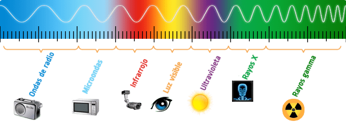
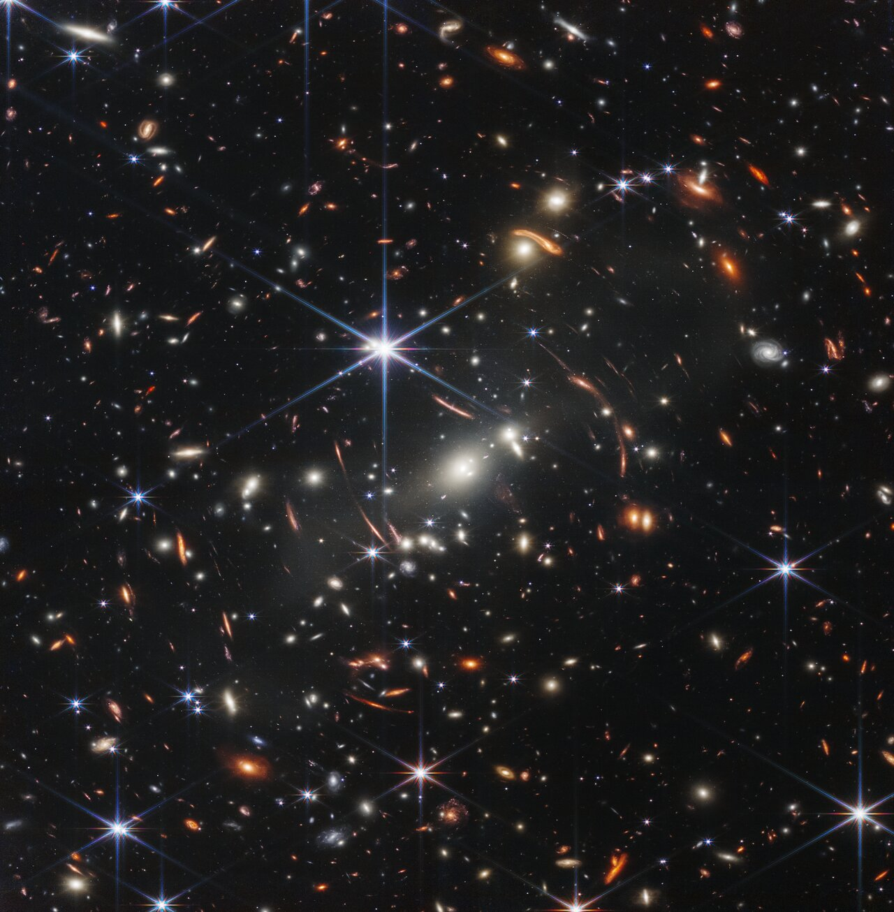
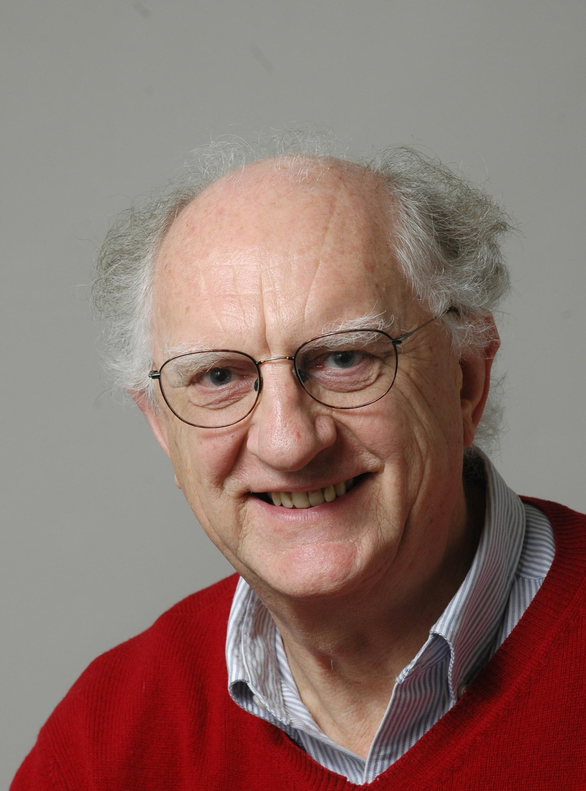
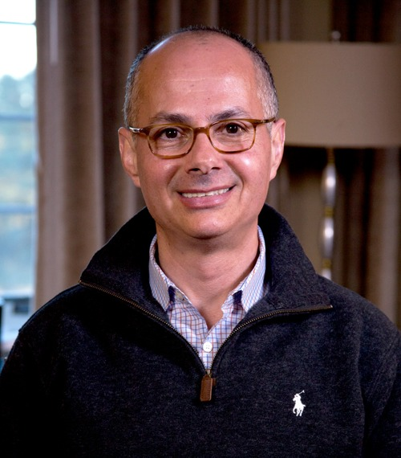
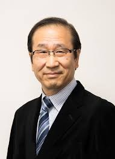
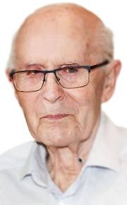
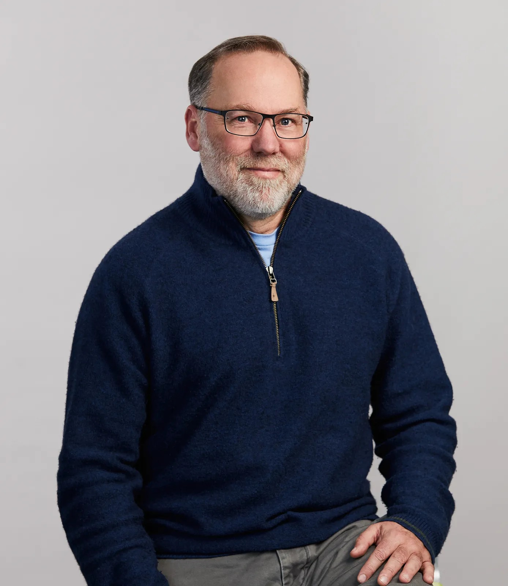
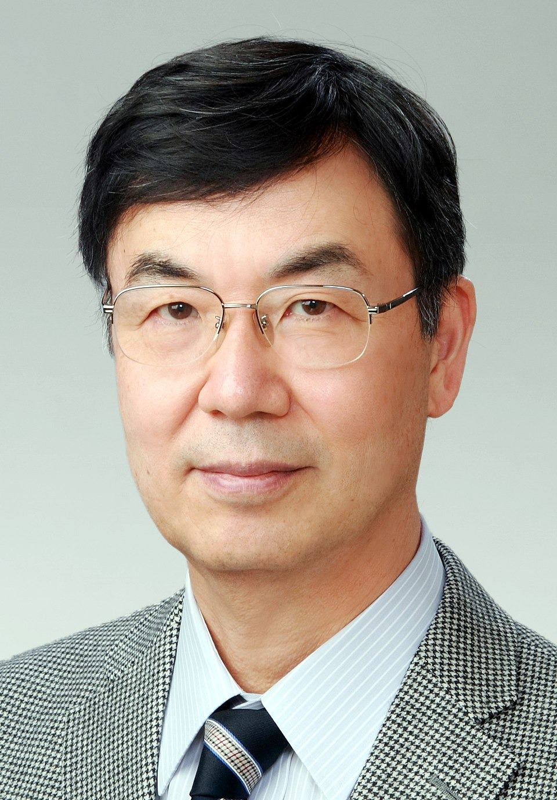
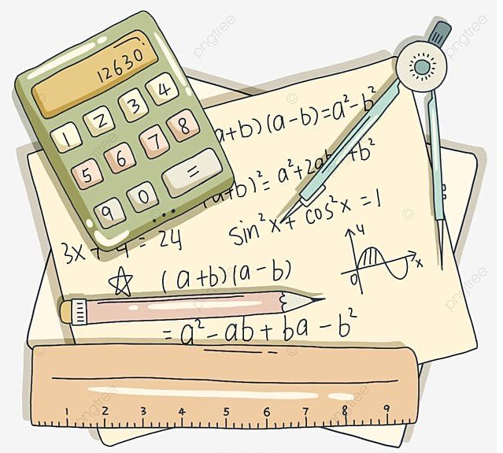

Throughout history, humanity has tried to understand how the universe works. Two concepts have been fundamental in this process: gravity, which describes how things with mass interact, and light, which is the main medium through which we observe and measure the cosmos.
From the foundational work of Isaac Newton to modern space telescopes, the study of these phenomena has led to extraordinary advancements in physics, astronomy, and contemporary technology. This article presents the essential principles of gravitation and the electromagnetic spectrum in an accessible way, supported by relevant scientific research.
The Law of Universal Gravitation
In 1687, Isaac Newton formulated the Law of Universal Gravitation, which states that all bodies in the universe attract each other with a force proportional to the product of their masses and inversely proportional to the square of their distance. This law made it possible to understand for the first time the motion of planets, satellites, and comets. Despite its age, it remains an essential tool in classical physics and in fields such as aerospace engineering
One of the modern studies that validate and expand this law is:
Scientific Article 1:
Will, C. M. (2014). The Confrontation between General Relativity and Experiment.
Living Reviews in Relativity. This article analyzes how Newton's theory was surpassed in accuracy by General Relativity (for example, in explaining the orbit of Mercury), but it highlights that the law of universal gravitation remains an excellent approximation for most everyday and astronomical phenomena. It also notes that numerous measurements from satellites and navigation systems confirm the validity of these gravitational models at human and planetary scales. The detection of gravitational waves in 2015 by the LIGO experiment was a definitive proof of Einstein's prediction regarding disturbances in spacetime.
The Electromagnetic Spectrum: Light Beyond the Visible

Light is a manifestation of electromagnetic radiation, which travels as energy waves and also behaves as particles (photons).
Beyond the Visible. What we perceive as “visible light” is only a small part of the electromagnetic spectrum, which is organized by wavelength and frequency. The spectrum includes: Radio Waves (used for detecting pulsars and galaxy formation), Microwaves (essential for studying the Cosmic Microwave Background), Infrared (IR) (used for observing young stars and cool cosmic dust), Visible Light (for nearby objects), Ultraviolet (UV) (for studying hot regions), X-rays (for detecting hot gas around black holes), and Gamma Rays (produced by high-energy phenomena like supernova explosions).
Each part of this spectrum is fundamental for modern astronomy, as each wavelength shows us a different "layer" of the universe (temperature, chemical composition, velocity, etc.).
Scientific Article 2:
Fixsen, D. J. (2009). The Temperature of the Cosmic Microwave Background. The Astrophysical Journal.
In this study, the author analyzes the microwave radiation from the Cosmic Microwave Background (CMB), the "echo" of the Big Bang. The precise measurement of this radiation (2.725 Kelvin) helped confirm the standard cosmological model and laid the groundwork for understanding the composition and early history of the universe. This work exemplifies how analyzing radiation beyond the visible spectrum helps us reconstruct the cosmos's history.
The Synergy:
Gravity and Light in Modern Astronomy. The combination of these two pillars has allowed scientists to unravel the greatest cosmic mysteries. Light brings us the information; gravity gives us the context of how that light interacts with the structure of spacetime.
Gravitational Lensing:
This is the most direct proof of General Relativity. Massive objects (like galaxy clusters) act as cosmic "magnifying glasses," bending the light from galaxies behind them. This phenomenon is used to detect dark matter, which does not emit light, but its presence is inferred solely by its powerful gravitational effect on visible light.

Redshift:
The light from distant galaxies is stretched (its wavelength increases toward the red end of the spectrum) due to the expansion of the universe. By measuring this effect in the electromagnetic spectrum, astronomers can calculate the velocity and distance of objects, confirming the universe is expanding.
Black Holes and Accretion Disks:
A black hole is a region of space where gravity is so intense that not even light can escape (from the event horizon). Although the black hole itself is invisible, we can detect it by observing the high-energy light (X-rays) emitted by the gas and dust spinning around it before being consumed (the accretion disk).
Gravity and the electromagnetic spectrum are two essential foundations for understanding the universe. The first explains how massive bodies relate and determines the cosmos's large-scale structure; the second allows us to observe and analyze distant phenomena inaccessible to human senses.
The reviewed scientific studies demonstrate that even as physical theories evolve, these principles remain current and are indispensable for the advancement of knowledge. Thanks to them, humanity continues to broaden its view of the universe, from the microscopic scale to the farthest reaches of spacetime.
Flores Rivera Frida Merari
Flores Rivera Frida Merari
Dominguez Catillo Melani Naomi
Dominguez Catillo Melani Naomi
Premios Nobel de Física 2025
Reconocimiento a los pioneros de la mecánica cuántica aplicada a la electrónica.
La Distinción: Descubrimiento del Túnel Cuántico en Circuitos
París, 7 oct (EFE).- El investigador Michel Devoret, el británico John Clarke y el estadounidense
John Martinis fueron anunciados como ganadores del Premio Nobel de Física 2025.
La Real Academia de las Ciencias Sueca los distinguió «por el descubrimiento del efecto túnel
cuántico macroscópico y la cuantización de la energía en un circuito eléctrico».
El jurado destacó que sus hallazgos han impulsado el desarrollo de la tecnología cuántica
moderna, con aplicaciones cruciales en criptografía, computación y sensores cuánticos,
demostrando fenómenos fundamentales de la mecánica cuántica en chips diminutos.
Michel Devoret (Francia)
Trayectoria y Formación
Nacido en París en 1953, Devoret se formó como ingeniero en la Escuela Nacional Superior de
Telecomunicaciones de París, antes de sumergirse en los campos de la óptica cuántica, la física
atómica y molecular y la física de la materia condensada.
Tras doctorarse en 1982 en París, realizó una estancia posdoctoral en Berkeley (EE.UU.) entre
1982 y 1984. Fue precisamente allí, en el laboratorio del profesor Clarke, donde midió por
primera vez los niveles cuánticos mesoscópicos de una unión Josephson (formada por dos
superconductores separados por un aislante delgado y que permite que los pares de electrones se
atraviesen por efecto túnel cuántico, generando corriente sin resistencia).
Contribuciones Clave
Ya de vuelta en Francia, continuó sus investigaciones en electrónica cuántica mecánica y fundó el
grupo Quantronique en el laboratorio de Orme des Merisiers (CEA-Saclay). Entre los principales
resultados de este grupo figuran la invención de la bomba de electrones, la observación
directa de la carga de los pares de Cooper y la creación de un bit cuántico superconductor,
bautizado como Quantronium.
Desde 2002, Devoret es profesor en la Universidad de Yale, donde su grupo de investigación -en
colaboración con Rob Schoelkopf, Steve Girvin y Dan Prober- desarrolló un nuevo tipo de
amplificador de ruido ultrabajo.
Reconocimientos
Además del Nobel, antes recibió premios destacados como el Oliver E. Buckley Condensed Matter
Prize (2018) o el Comstock Prize in Physics (2024). Es igualmente miembro de la Academia
Americana de Artes y Ciencias desde 2003 y director del Laboratorio el Quantronics (QuLab) en
Yale.
John M. Martinis (Estados Unidos)
Formación y Primeros Pasos
Nació en 1958 en los Estados Unidos. Cursó su formación universitaria en la University of
California, Berkeley, donde obtuvo su licenciatura y doctorado en física, este último bajo la
supervisión de John Clarke, lo que orientó su carrera hacia la física experimental y la
tecnología cuántica. Su tesis doctoral, centrada en la física de dispositivos Josephson, sentó
las bases para su futura carrera en computación cuántica.
Tras completar un posdoctorado en el Commissariat à l’Énergie Atomique de Saclay (Francia), se
incorporó al Instituto Nacional de Estándares y Tecnología (NIST), donde trabajó en el
desarrollo de amplificadores basados en dispositivos superconductores de interferencia cuántica
(SQUIDs).
El Hito de la Supremacía Cuántica
Desde 2002, centró su investigación en los qubits de unión Josephson, con el propósito de
construir el primer ordenador cuántico funcional. En 2014, su grupo fue incorporado por Google
con la misión de desarrollar la primera computadora cuántica operativa.
El 23 de octubre de 2019, Martinis y su equipo publicaron en Nature el artículo Quantum
supremacy using a programmable superconducting processor, en el que anunciaron haber
alcanzado por primera vez la supremacía cuántica con un procesador de 53 cúbits, hito
considerado uno de los más importantes del siglo XXI.
Contribuciones y Reconocimientos
Entre sus contribuciones más destacadas figuran: el desarrollo de qubits superconductores
altamente coherentes, su trabajo pionero en arquitecturas de corrección de errores
cuánticos y la demostración empírica de la supremacía cuántica. Actualmente, ejerce como
director de tecnología de Qolab, una compañía que busca la fabricación a gran escala de
cúbits de alta calidad.
Fue galardonado con el Premio Oliver E. Buckley de Materia Condensada (APS) y la Medalla Dirac
(ICTP), entre otros.
John Clarke (Reino Unido)

Orígenes y Formación
Nació el 10 de febrero de 1942 en Reading, Inglaterra. Cursó estudios en la Universidad de
Cambridge, donde obtuvo su licenciatura en Ciencias Naturales (Física). Posteriormente, se
trasladó a la Universidad de California, Berkeley, para realizar su doctorado. Durante su
estancia en Berkeley en la década de 1960, se especializó en el campo de la superconductividad y
los interferómetros superconductores.
Pionero de los SQUIDs
Clarke desarrolló casi toda su carrera profesional en la Universidad de California, Berkeley,
donde llegó a ser profesor emérito de física. Fue pionero mundial en el desarrollo y
perfeccionamiento de los SQUIDs (Superconducting Quantum Interference Devices),
dispositivos capaces de detectar campos magnéticos extremadamente pequeños.
Su enfoque combinaba sólidos fundamentos teóricos con habilidades experimentales avanzadas, lo
que le permitió abrir nuevos caminos en la detección de señales cuánticas débiles. Su trabajo
contribuyó a que dispositivos basados en estas tecnologías fueran empleados en
magnetoencefalografía (MEG), un método no invasivo para estudiar la actividad cerebral.
Contribuciones Fundamentales
A lo largo de su carrera, publicó más de 200 artículos científicos. Entre sus contribuciones más
notables se encuentran: mejoras técnicas en la sensibilidad de los SQUIDs, el desarrollo de
técnicas de lectura cuántica aplicadas a qubits superconductores, y estudios
fundamentales sobre ruido cuántico y decoherencia, esenciales para el avance de la
computación cuántica.
Fue distinguido como Miembro de la Royal Society (Reino Unido) y de la National Academy of
Sciences (EE. UU.), además de recibir el premio Oliver E. Buckley de la American Physical
Society.
Premio Nobel de Química 2025
Galardonados por el desarrollo de estructuras metalorgánicas (MOF) y la Química Reticular.
Galardonados y Descubrimiento
Tokio, 8 oct (EFE).- El Premio Nobel de Química 2025 fue otorgado al jordano Omar M.
Yaghi, al japonés Susumu Kitagawa y al británico Richard Robson.
Fueron reconocidos «por el desarrollo de estructuras metalorgánicas (MOF)». Estos
materiales porosos son esenciales para el almacenamiento de hidrógeno y metano, la captura y
conversión de carbono, la captación de agua del aire del desierto y la catálisis.
Se prevé que los avances basados en sus descubrimientos conduzcan a innovaciones radicales en la
ciencia de los materiales, con amplias implicaciones tanto para el ámbito académico como para la
industria.

Omar M. Yaghi (Jordania / EE.UU.)
Pionero de la Química Reticular
El profesor Yaghi es ampliamente conocido por ser pionero en el desarrollo de estructuras
metalorgánicas (MOF) y estructuras orgánicas covalentes (COF). Denominó este campo "Química
Reticular" y lo define como "la unión de bloques moleculares en estructuras extendidas
mediante enlaces fuertes".
Materiales Ultraporosos
Yaghi reportó en 1995 la síntesis de las primeras MOF. Utilizó estas estructuras, denominadas
unidades de construcción secundarias (SBU), para construir MOF con porosidades
excepcionalmente altas, superando ampliamente el récord de otros sólidos porosos (como MOF-5 con
2900 m²/g y MOF-210 con 10 400 m²/g).
En 2005, demostró cómo las moléculas orgánicas pueden unirse mediante enlaces covalentes para
formar estructuras orgánicas covalentes (COF). El COF-108, una COF tridimensional, presenta una
estructura ultraporosa, el material menos denso conocido.
Impacto Global
La invención de los MOF y los COF contribuye a un aire, una energía y un agua más limpios. Su
desarrollo para recolectar agua del aire del desierto utilizando MOF fue presentado en el Foro
Económico Mundial de 2017 como una de las diez principales tecnologías emergentes para
transformar el mundo.
Ha publicado más de 300 artículos sobre MOF y COF, que han recibido más de 250.000 citas.
Susumu Kitagawa (Japón)

Trayectoria y Contribución
Nacido en Kioto en 1951. Es profesor distinguido y vicepresidente ejecutivo en la Universidad de
Kioto. En 1989, Kitagawa descubrió que era posible desarrollar un material poroso con agujeros
similares a los de un panal, utilizando una mezcla de metal y materia orgánica.
Publicó su primer artículo sobre **estructuras metalorgánicas (MOF)** en una revista química
alemana en 1997. Las MOF son un tipo de material poroso formado por la combinación de iones
metálicos con moléculas orgánicas que crean una red tridimensional muy ordenada con espacios
vacíos en su interior.
Utilidades
Esas características propician una alta porosidad y una gran superficie interna. Esto las
convierte en estructuras muy recomendables para almacenar gases como hidrógeno, metano o dióxido
de carbono; para reducir las emisiones y combatir el cambio climático; para atrapar
contaminantes o para fabricar fármacos.
Kitagawa es la novena persona japonesa que gana el Nobel de Química.
Richard Robson (Reino Unido / Australia)

Pionero del Diseño Molecular
Sídney (Australia), 8 oct (EFE).- El británico Richard Robson, con una prestigiosa carrera de más
de medio siglo en la australiana Universidad de Melbourne, fue galardonado junto a sus colegas.
Robson, nacido en 1937, está licenciado y doctorado en la Universidad de Oxford. Se incorporó al
Departamento de Química Inorgánica de la Universidad de Melbourne en 1966, donde ha trabajado
desde entonces. En la Universidad, le llaman «el hombre que construyó todo un nuevo campo de
la química».
Descubrimientos
Robson probó en 1989 a utilizar las propiedades inherentes de los átomos de una forma novedosa:
combinó iones de cobre con carga positiva con una molécula de cuatro brazos. Cuando se unieron,
formaron un cristal espacioso y bien ordenado, como un diamante lleno de innumerables cavidades.
Su innovador trabajo inspiró un nuevo campo de la química que ha revolucionado la manera en la
que se estudia en la industria.
Premio Nobel de Fisiología o Medicina 2025
Reconocimiento a los descubrimientos sobre la Tolerancia Inmunitaria Periférica.
Galardonados y Descubrimiento
El 6 de octubre de 2025, el Premio Nobel de Fisiología o Medicina fue otorgado a los
estadounidenses Mary E. Brunkow y Fred Ramsdell, junto al japonés Shimon
Sakaguchi.
Fueron galardonados por sus investigaciones sobre la tolerancia inmunitaria periférica, el
proceso crucial que evita que el sistema inmunitario ataque al propio cuerpo (autoinmunidad).
Sus aportes han resultado fundamentales para comprender el funcionamiento del sistema inmune y
las razones por las que la mayoría de las personas no desarrollan trastornos autoinmunes graves,
abriendo nuevas vías para terapias inmunomoduladoras.
Mary E. Brunkow (Estados Unidos)
Formación y Contribuciones
Nació en 1968. Se doctoró en Genética Humana en la Universidad de Washington (1997). Aunque fue
premiada por su trabajo en inmunología, su hallazgo más reconocido en la literatura previa fue
la identificación del gen LRP5, clave en la regulación de la masa ósea (osteoporosis
severa juvenil), publicado en Nature Genetics en 2001.
Fue profesora asociada en la Universidad de Washington y fundó el Centro de Genómica Ósea
Translacional (TGBC). Su enfoque interdisciplinario, combinando genética molecular y
medicina traslacional, fue decisivo en sus aportes sobre la tolerancia inmunitaria.
Antes del Nobel, recibió el Lasker Award for Clinical Medical Research (2023) y fue elegida
miembro de la National Academy of Sciences en 2024.
Fred Ramsdell (Estados Unidos)

Descubrimiento del FOXP3 y las Tregs
Nació en 1960. Obtuvo su doctorado (Ph.D.) en inmunología en la UCLA. Su carrera combinó la
ciencia básica con la industria biotecnológica (Immunex, Novo Nordisk).
Su mayor reconocimiento llegó por su trabajo fundamental sobre el gen FOXP3. Alrededor del
año 2000, Ramsdell y su equipo identificaron el papel crucial de este gen en el desarrollo de
las **células T reguladoras (Tregs)**, que son esenciales para mantener la tolerancia
inmunológica y prevenir enfermedades autoinmunes como el síndrome IPEX.
Este descubrimiento es considerado uno de los más importantes en inmunología del siglo XXI. Fue
reconocido, junto a Sakaguchi, con el prestigioso Premio Crafoord en Ciencias Biológicas 2017.
Shimon Sakaguchi (Japón)

El Padre de las Células T Reguladoras (Tregs)
Nació en 1948. Obtuvo su título de médico (MD) y doctorado (PhD) en inmunología en la Universidad
de Kyoto.
En 1982, publicó un estudio seminal donde identificó una población de células T con propiedades
inmunorreguladoras. El gran punto de inflexión fue la identificación y caracterización en la
década de 1990 de las células T reguladoras (Tregs), un subtipo de linfocitos T CD4+ que
expresan el factor de transcripción FoxP3.
Sus investigaciones establecieron que las Tregs son fundamentales para mantener la tolerancia
inmunológica y evitar enfermedades autoinmunes. Su trabajo influyó en terapias para
enfermedades autoinmunes (lupus, diabetes tipo 1) y en oncología. Recibió el Premio Gairdner
Internacional (2015) y el Premio Crafoord (2017).
Dominguez Catillo Melani Naomi
Entrevista científica
Del laboratorio al mundo real
El ingeniero Emmanuel Crisóstomo Martínez, egresado del Instituto Tecnológico de Orizaba en la carrera de Ingeniería Química, ha construido su trayectoria profesional a partir de la disciplina y la pasión por los procesos moleculares que descubrió desde sus años de estudiante. Durante su formación académica enfrentó diversas dificultades que fortalecieron su carácter y le enseñaron el valor del esfuerzo y la comprensión profunda de los fenómenos químicos.
Hoy, con experiencia en proyectos de innovación y en la implementación de normatividades dentro de la industria, comparte una visión de la química que va más allá de los laboratorios: una ciencia capaz de transformar la vida cotidiana y abrir posibilidades para el futuro.
¿Qué momento o experiencia despertó su interés por la química y lo llevó a dedicarse a esta área?
Fue en tercero de secundaria, iba a reprobar la materia de química y necesitaba obtener un nueve para poder aprobar. Así que estudié mucho y me sorprendió descubrir todos los procesos que pasan a nivel molecular para que resulten o se obtengan ciertas reacciones.
¿Cuál ha sido el reto más grande que enfrentó en su carrera como químico y de qué manera logró superarlo?
En la universidad, la materia de Ingeniería de Transporte de Fluidos es una materia tan impresionante como compleja. Fue una de las pocas materias en las que me tuve que esforzar dedicando horas de estudio. En la vida laboral, la implementación de normatividades en una empresa.
¿Podría compartirnos un proyecto o investigación en química que considere especialmente significativo en su trayectoria?
El desarrollo de un fluctuante a base de mucílago de nopal realizado para una materia, donde se realizó toda la base documental y experimental, obteniendo como resultado un biofluctuante.
¿Cómo ha cambiado su visión de la química desde que comenzó hasta la actualidad?
Ha cambiado por etapas, dado que el primer acercamiento fue entender que existe un mundo de procesos a nivel molecular. Posteriormente, entender que dichos procesos son la base de todo. Mi visión actual de la química es que es una materia sumamente importante, capaz de explicar cosas que podrían parecer magia o ciencia ficción y que a futuro podría darnos capacidades que hasta hoy solo son sueños.
¿Qué papel considera que juega la química en la vida cotidiana de las personas que no trabajan directamente en ella?
Tiene un papel sumamente importante, dado que interviene en todos y cada uno de los procesos de la vida y del planeta.
¿Qué ejemplo cotidiano utilizaría para mostrar que la química está presente en todas partes?
La sal (cloruro de sodio) es algo que todos comemos, hemos visto y utilizado. Sus elementos juntos forman el condimento más utilizado en el mundo, pero sus elementos separados son sumamente peligrosos: el cloro (Cl) es un gas tóxico y el sodio (Na) es un metal blando sumamente reactivo con el oxígeno y especialmente con el agua.
¿Quién fue la persona que más lo inspiró en su camino y qué enseñanza suya continúa aplicando al día de hoy?
Creo que mi mamá, dado que ella es ingeniera química igual que yo, así como todos los docentes de mi carrera. Pero si tuviera que mencionar a uno sería al Dr. Joaquín Pinto Espinoza, profesor de dos materias (Balance de momentum, calor y masa, e Ingeniería de Transporte de Fluidos). Él me enseñó que en ingeniería no se necesita memorizar problemas, sino que se necesita entender los procesos para poder plantear una resolución a algún problema.
¿Qué consejo daría a los jóvenes que desean iniciar una carrera en química o en alguna rama de la ingeniería química?
Que estén completamente seguros, dado que no es una carrera fácil, y que está bien no seguir el mismo camino que todos.
¿Qué avance reciente en química considera que podría transformar el futuro?
Avances en química computacional, que utiliza simulaciones para predecir el comportamiento de las moléculas y diseñar nuevas estructuras.
Porras Gaspar Maria Fernanda
Festival Académico de DGETI 2025
Etapa Local del CBTis 142
El Festival Académico de la Dirección General de Educación Tecnológica Industrial (DGETI) es un espacio que celebra el talento, la disciplina y la dedicación de los estudiantes en diversas áreas del conocimiento. En su XXIV edición, la DGETI manifestó con orgullo el esfuerzo y la excelencia de los jóvenes del CBTis 142, quienes demostraron que la ciencia, la tecnología y la cultura son pilares fundamentales en su formación académica y personal.
La fase local se llevó a cabo el miércoles 30 de octubre de 2024 en las instalaciones del plantel, donde alumnos de quinto semestre participaron en disciplinas como Matemáticas, Física, Química, Biología, Inglés, Lectura y Expresión Oral y Escrita, Humanidades y Ciencias Sociales. Con entusiasmo y compromiso, cada estudiante mostró sus habilidades y dedicación, dejando en alto el nombre de la institución y fortaleciendo el espíritu académico que distingue al CBTis 142.
Resultados XXIV Festival Académico - Etapa Local
Resultados obtenidos en la etapa local de XXIV Festival Académico celebrado el 30 de octubre en las instalaciones del CBTis 142.

Matemáticas
Primer lugra:
Sánchez Romero Juan Pablo. 5A-Lab. Químico-Matutino